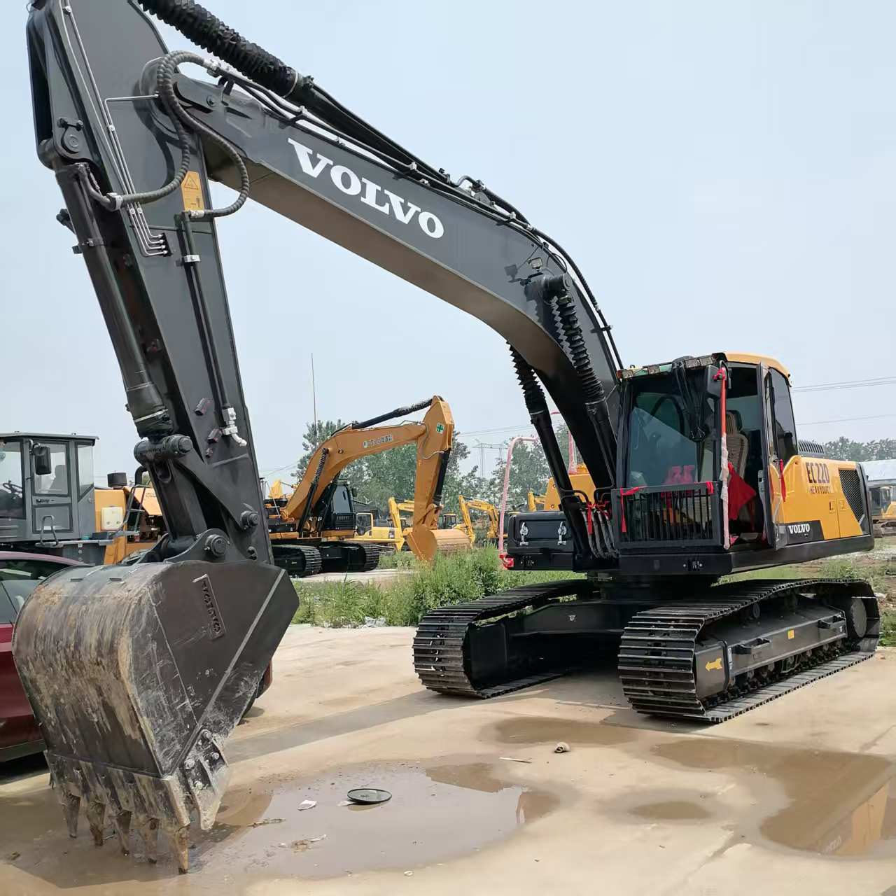

Refurbished Volvo EC220 Excavator
The Volvo EC220 is a versatile and high-performance hydraulic excavator, ideal for a variety of applications in the construction, mining, and landscaping industries. When purchasing a refurbished Volvo EC220, operators can expect significant savings while still benefiting from the renowned quality and durability associated with Volvo machines.
Honestly, it's almost impossible to buy a brand new excavator from China. They either don't exist or are made in China. If a Chinese seller tells you their Caterpillar/Komatsu/Volvo/Kobelco/Hitachi is brand new, they're lying. Therefore, a refurbished excavator is your best bet.

Here are the detailed specifications for a refurbished Volvo EC220DL or EC220E excavator:
Operating Weight and Dimensions
- Operating Weight: 22,000–23,500 kg
- Transport Length: ~9.7–10.0 meters
- Transport Width: ~2.9–3.0 meters
- Transport Height: ~3.0–3.2 meters
- Tail Swing Radius: ~3.0–3.2 meters
- Ground Clearance: ~440–470 mm
- Track Width: 600 mm standard
Engine and Powertrain
- Engine Model:
- EC220DL: Volvo D6H (Tier 3 compliant)
- EC220E: Volvo D6J (Tier 4 Final compliant)
- Rated Power Output:
- EC220DL: ~129 kW (173 hp) @ 1,800 rpm
- EC220E: ~129–132 kW (173–177 hp) @ 1,800 rpm
- Maximum Torque: ~800–850 Nm
- Fuel Tank Capacity: ~400–450 liters
- Travel Speed: 3.0–5.0 km/h
- Swing Speed: ~11 rpm
- Gradeability: Up to 35°
Hydraulic System
- Main Pump Type: Electro-hydraulic system with intelligent flow control
- Flow Rate: ~2 × 220–240 L/min
- System Pressure: Up to 34.3 MPa
- Hydraulic Oil Capacity: ~300–350 liters
- Boom/Arm/Bucket Priority: Programmable for faster cycle times
- Regeneration System: Enhances simultaneous operations and reduces cavitation
Performance Metrics
- Bucket Capacity: 0.8–1.3 m³ (SAE heaped)
- Max Digging Depth: ~6.7–6.9 meters
- Max Reach (Horizontal): ~10.0–10.3 meters
- Max Dump Height: ~6.5–6.7 meters
- Bucket Digging Force: ~140–150 kN
- Arm Digging Force: ~100–110 kN
Cab and Operator Features
- Cab Type: ROPS/FOPS certified
- Display: LCD monitor with diagnostics, fuel tracking, and work mode selector
- Controls: Electro-hydraulic joysticks with customizable sensitivity
- Comfort: Air suspension seat, climate control, low vibration cab
- Visibility: Rear-view camera, wide glass area, LED work lights
Smart Features and Efficiency
- Fuel Efficiency:
- Auto idle and engine shutdown
- ECO mode with load-sensing hydraulics
- Work mode selector: I (Idle), F (Fine), G (General), H (Heavy), P (Power Max)
- Emissions Control:
- EC220DL: Tier 3 (no DPF/SCR)
- EC220E: Tier 4 Final (DPF + SCR + EGR)
- Telematics Ready: Volvo CareTrack system for remote diagnostics and fleet tracking
Attachments Compatibility
- Standard Bucket: 0.8–1.3 m³
- Optional Tools: Hydraulic breaker, demolition shear, compactor, ripper
- Quick Coupler: Hydraulic or manual options available
Refurbishment Scope
Refurbished EC220 units typically include:
- Engine Overhaul: Turbocharger, injectors, seals, cooling system
- Hydraulic Restoration: Pump recalibration, valve block testing, hose replacement
- Electrical Diagnostics: Monitor, sensors, wiring harness
- Cab Reconditioning: Seat, joysticks, HVAC, repainting
- Structural Repairs: Boom/bucket welding, bushing replacement, undercarriage rebuild
Overview of the Volvo EC220 Excavator
The Volvo EC220 is part of the company's EC series, designed for a wide range of heavy-duty applications. The EC220 offers excellent fuel efficiency, advanced hydraulics, and outstanding comfort, making it an excellent all-around machine for demanding jobs. Whether you are involved in excavation, trenching, lifting, or material handling, the EC220 is designed to offer high productivity, reliability, and low operational costs.
Key Specifications of the Volvo EC220
-
Operating Weight: Approximately 22,000 kg (48,500 lbs)
-
Engine Power: 129 kW (173 hp)
-
Max Digging Depth: Up to 6.8 meters (22.3 feet)
-
Max Reach: Approximately 9.6 meters (31.5 feet)
-
Bucket Capacity: Typically 0.9–1.3 cubic meters (32–46 cubic feet)
-
Fuel Tank Capacity: Around 400 liters (105 gallons)
-
Travel Speed: Up to 5.5 km/h (3.4 mph)
With a combination of powerful performance, reliable hydraulics, and an ergonomic design, the Volvo EC220 is an efficient and long-lasting machine suited for a variety of tough applications.
Engine and Performance Efficiency
The Volvo EC220 is powered by the Volvo D6D engine, a reliable and efficient engine known for providing both power and fuel efficiency.
-
Engine Power: The D6D engine produces 129 kW (173 hp), delivering sufficient power to perform heavy lifting, digging, and other operations in challenging conditions.
-
Fuel Efficiency: The Volvo EC220 is designed to be fuel-efficient without compromising performance. The engine utilizes advanced fuel management technology to optimize fuel consumption and reduce overall operational costs. It allows operators to work longer hours with less downtime spent refueling.
-
Emission Compliance: Like many other Volvo machines, the EC220 complies with the latest environmental regulations, reducing emissions and minimizing environmental impact. This makes it a great option for projects in areas with stringent emissions standards.
Hydraulics and Performance Capabilities
Volvo’s engineering expertise in hydraulics allows the EC220 to deliver powerful performance across various tasks. The excavator's hydraulic system is designed to enhance overall productivity by ensuring precise movements and quick cycle times.
-
Load-Sensing Hydraulics: The EC220 is equipped with a load-sensing hydraulic system, which automatically adjusts the hydraulic flow depending on the load being handled. This helps optimize fuel consumption, ensuring the machine operates at maximum efficiency while providing high hydraulic power.
-
Hydraulic Performance: The hydraulic system ensures excellent digging and lifting capabilities, with the ability to handle even the most demanding ground conditions. Whether dealing with hard clay, dense gravel, or loose soil, the EC220 can handle a wide variety of tasks with ease.
-
Quick Cycle Times: The machine’s hydraulics are designed to offer fast and smooth cycle times, allowing the operator to complete tasks quicker and more efficiently. This reduces downtime and boosts productivity, especially in high-output jobs.
Durability and Construction
Volvo is known for producing equipment that is built to last, and the EC220 is no exception. The excavator’s robust construction ensures it can handle tough working conditions, while its low maintenance requirements make it a cost-effective long-term solution for construction projects.
-
Undercarriage: The EC220 features a durable undercarriage designed to withstand the stresses of rough terrain. Its tracks, rollers, and sprockets are made from high-strength materials that provide excellent stability, even on uneven ground.
-
Heavy-Duty Frame and Boom: The EC220 is equipped with a reinforced frame and boom that can withstand heavy loads and harsh operating conditions. These components are designed to resist wear and tear, ensuring the excavator remains operational for many years with minimal downtime.
-
Wear-Resistant Parts: Components such as the bucket, hydraulic cylinders, and arm are built to last, even in tough environments. These parts are designed to resist abrasion and other forms of wear, making the EC220 an excellent choice for high-demand applications.
Operator Comfort and Safety
The Volvo EC220 is built to provide a comfortable and safe working environment for the operator. With its spacious cab and user-friendly controls, operators can enjoy enhanced productivity while reducing fatigue during long hours of operation.
-
Ergonomic Cab: The EC220 offers a spacious, ergonomic cabin that provides excellent visibility, reducing blind spots and allowing operators to have full control of the machine. The cab is equipped with an adjustable seat, air conditioning, and intuitive controls to improve comfort and reduce operator strain.
-
Easy-to-Use Controls: The controls on the EC220 are designed to be intuitive and easy to use, even for novice operators. The machine is equipped with joysticks and a digital display that provides real-time data on engine health, fuel usage, and other important information, allowing operators to focus on their tasks.
-
Safety Features: Volvo prioritizes operator safety, and the EC220 is no different. The excavator comes with a reinforced ROPS (Roll-Over Protection Structure) and a FOPS (Falling Object Protective Structure), providing safety during both normal and emergency conditions. Additionally, the cab features high-visibility glass, anti-slip steps, and a well-placed control panel to further enhance safety.
Why Choose a Refurbished Volvo EC220?
When purchasing a refurbished Volvo EC220, you can enjoy the same high-quality performance and durability of a new machine, but at a significantly lower cost. Refurbished excavators go through a detailed inspection and overhaul process to ensure they meet the highest standards of performance, making them a reliable option for businesses that need top-tier equipment on a budget.
-
Cost-Effective Solution: Refurbished machines like the Volvo EC220 can be 30–50% cheaper than new models, making them a highly attractive option for businesses that want to keep costs down without sacrificing quality or performance.
-
Comprehensive Overhaul: A refurbished Volvo EC220 is typically subjected to a comprehensive inspection process where the engine, hydraulics, undercarriage, and structural components are checked, repaired, and replaced if necessary. This ensures that the machine performs just like a new model, offering great value for money.
-
Warranty and After-Sales Support: Many refurbished Volvo EC220 models come with a warranty that covers key components and ensures the buyer has access to ongoing support and parts, should any issues arise.
-
Sustainability: Choosing a refurbished Volvo EC220 is also an environmentally sustainable choice. By extending the life of an existing machine, you reduce the need for new manufacturing, which helps conserve resources and reduce waste.
Maintenance Tips for the Volvo EC220
To keep your Volvo EC220 in optimal working condition, regular maintenance is essential. Here are some key maintenance tips:
-
Engine Maintenance: Regularly change the engine oil, replace filters, and inspect for signs of wear or leaks. Clean the air filters and ensure the cooling system is functioning properly.
-
Hydraulic System: Inspect the hydraulic hoses and connections for any leaks, cracks, or wear. Change the hydraulic fluid and replace filters at regular intervals to maintain smooth operation.
-
Undercarriage: Regularly check the tracks for signs of wear. Keep the undercarriage components clean and lubricated to prevent excessive wear and tear.
-
Electrical System: Inspect the battery regularly, ensuring it is charged and free of corrosion. Also, check the wiring and electrical components for any signs of damage or wear.
-
General Cleaning and Lubrication: Keep the entire machine clean to prevent dirt and debris from causing issues with moving parts. Apply lubrication to key areas to reduce friction and wear.
Conclusion
The Volvo EC220 is a powerful, durable, and versatile excavator that excels in a wide range of applications. With its strong engine, advanced hydraulic system, and comfortable operator features, the EC220 is an excellent choice for demanding projects. Choosing a refurbished Volvo EC220 provides significant cost savings without sacrificing the machine's performance, making it a smart investment for businesses that want to maximize their return on investment while minimizing expenses. Regular maintenance ensures that the machine will continue to perform efficiently, making the EC220 a reliable and long-lasting asset for any construction or excavation project.
Our Commitment
- 2 years / 4000 hours warranty.
- EPA certified.
- No sweatshop labor.
Contacts

- [email protected]
- Youtube Instagram Facebook
- Navigation: G206 (Sishu Bridge) in Changfeng County, Hefei City, Anhui Province, 200 meters north to the east